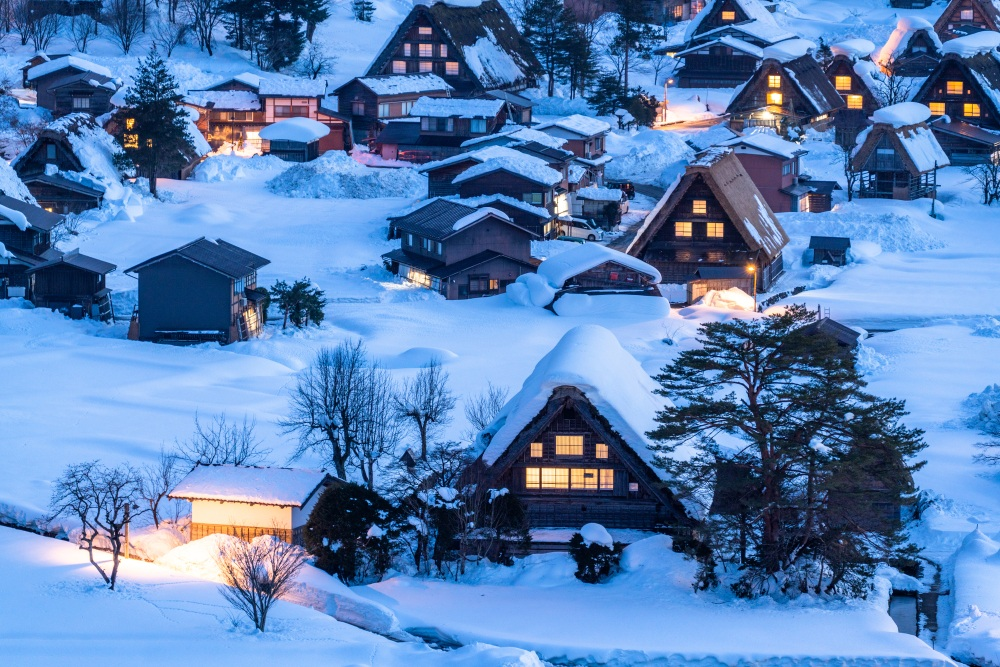

-

岐阜城 標高329ｍ（国土地理院の三角点設置箇所）の金華山は、岐阜市の中心部に位置し、かつては稲葉山と呼ばれていました。山頂には斎藤道三公・織田信長公ゆかりの岐阜城がそびえ立ち、長良川と同様に岐阜市のシンボル的存在です。金華山にはロープウェーがあり、気軽に山頂までいくことができます。また、登山道も整備されており、気軽にハイキングを楽しむことができます。
詳しく見る -
 白川郷 白川郷は、岐阜県の北部に位置する合掌造りの集落で、世界遺産にも登録されています。冬には雪に覆われた美しい景色が広がり、四季折々の風情を楽しむことができます。合掌造りの家々は、急勾配の屋根が特徴で、雪下ろしのためにこの形状になっています。
詳しく見る